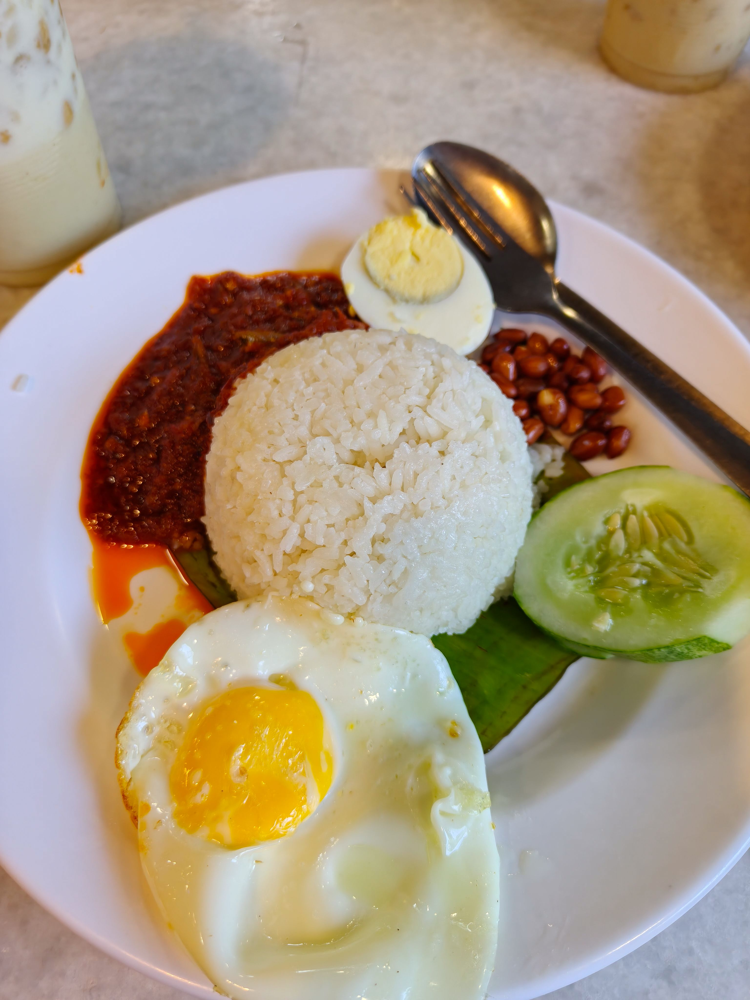
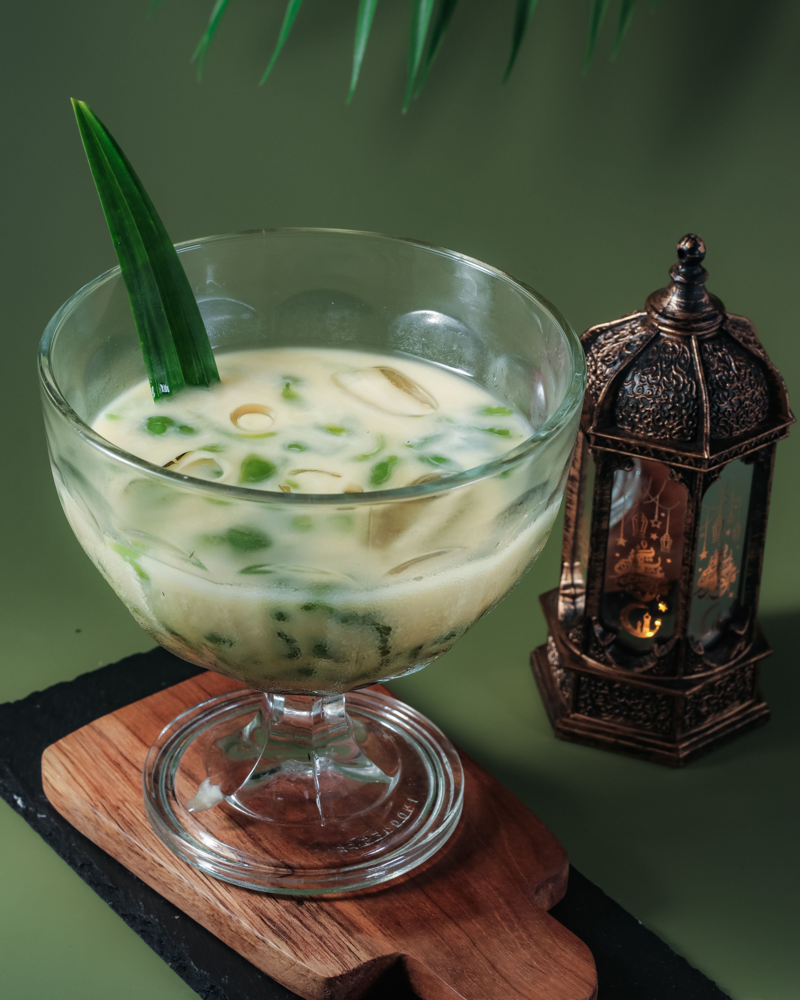
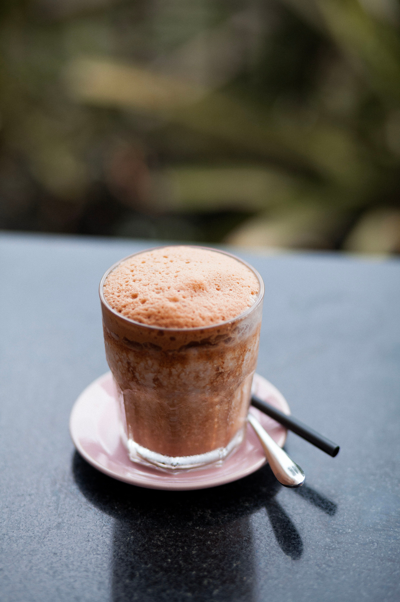
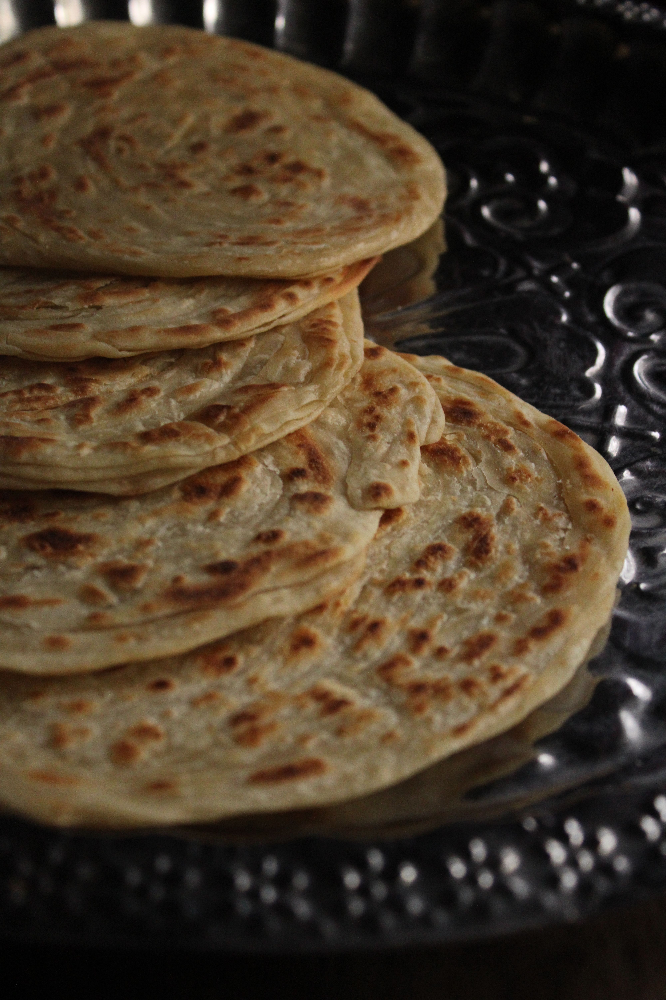
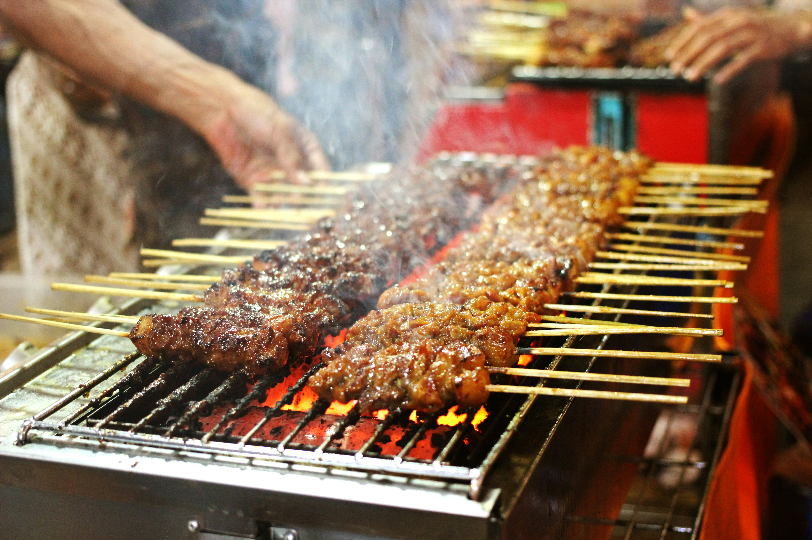

Categories

Mains
Stomach filling dishes you can eat for a full meal, from light coconut rice to slow-cooked rendang.

Snacks & desserts
Sweet and savoury treats that you will find almost at night markets and roadside stalls.

Drinks
Cold and hot drinks that go with almost every Malaysian meal with the real kick.
Featured Dish
Nasi Lemak
Nasi lemak is rice cooked in coconut milk, and many people call it Malaysia's unofficial national dish.

Roti Canai
Roti canai is a soft, flaky flatbread, and it's one of the most popular meals at mamak stalls.

Satay
Satay is a popular Malaysian dish consisting of skewered and grilled meat, typically served with a peanut sauce.
Teh Tarik
Teh tarik is a popular Malaysian milk tea, known for its distinctive pulling technique that creates a foamy top.